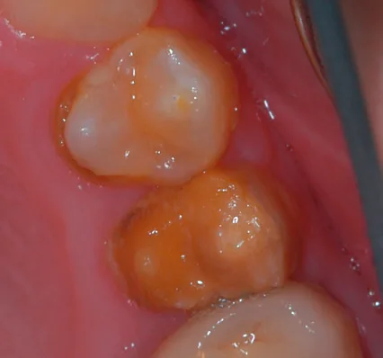

نسخه استخراجشده؛ ترجمه یا تأیید علمی انجام نشده است. وضعیت: captured
جوانهی دندان دائمی درست زیر ریشههای دندان شیری قرار دارد و در همان سالها مشغول ساختن مینای خود است.
آملوبلاستها — سلولهای سازندهی مینا — به التهاب و عفونت مجاور بسیار حساساند. عفونت پایدار دندان شیری میتواند کار آنها را در همان ناحیه مختل کند.
نتیجه، یک نقص موضعی مینا روی تاج دندان دائمی است که به آن دندان ترنر میگویند: لکهی رنگی، حفرهدار یا بدشکل، محدود به همان بخشی که هنگام عفونت در حال ساخته شدن بوده.
شدت آسیب به دو چیز بستگی دارد: عفونت در کدام مرحلهی آملوژنز رخ داده، و چه مدت ادامه یافته.

عفونت پایدار دندان شیری فقط مینا را درگیر نمیکند:
۱. اختلال مسیر رویش — جانشین ممکن است از مسیر طبیعی منحرف شود.
۲. تغییر زمان رویش — وقتی عفونت استخوان روی جوانه را از بین برده باشد زودتر؛ با فیبروز بافت پوشاننده، یا با از دست رفتن دندان شیری خیلی پیش از موعد (پیش از حدود هفتسالگی)، دیرتر.
۳. اختلال در شکل ریشه در آسیبهای شدید.
و هشدار: خودِ درمان هم میتواند آسیب بزند — عبور ابزار یا ماده از انتهای ریشه، مستقیماً به جوانه میرسد.
پس تعادل اینجاست: نه رها کردن عفونت، نه بیدقتی در درمان. هر دو به یک جا آسیب میزنند.
نوع سؤال: ساخت کلمه · 4 خانه
حروف منبع: ر · ت · ن · ر